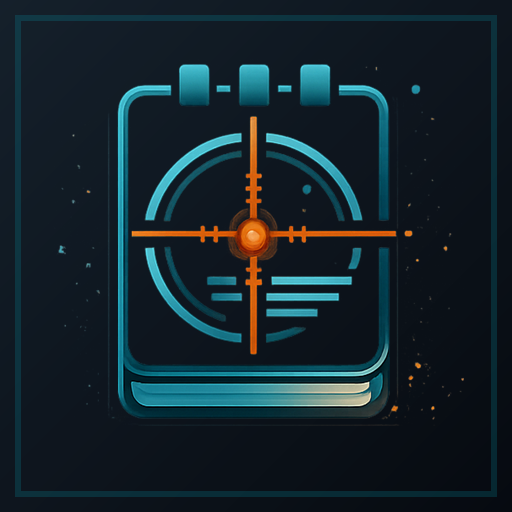
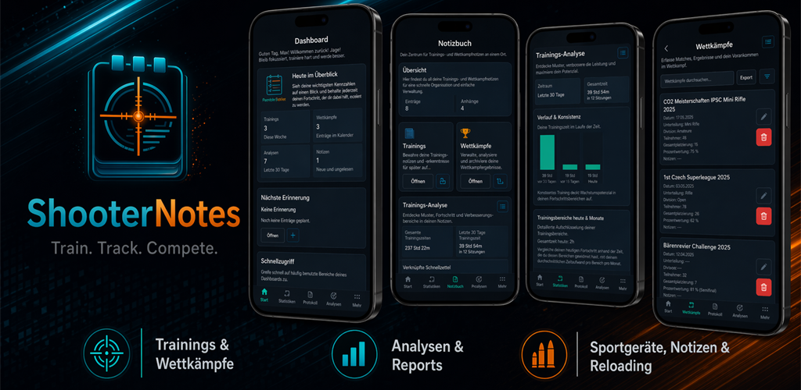

Lokal gespeichert
Persoenliche App-Daten werden grundsaetzlich direkt auf deinem Geraet gespeichert.

ShooterNotesLegal & Privacy
Rechtliche Informationen zur mobilen App ShooterNotes. Deine Trainings-, Wettkampf-, Waffen- und Wiederladedaten bleiben grundsaetzlich lokal auf deinem Geraet.

Persoenliche App-Daten werden grundsaetzlich direkt auf deinem Geraet gespeichert.
ShooterNotes verwendet derzeit keine externen Analyse- oder Werbedienste.
Export, externe Links und Erinnerungen werden nur durch deine aktive Nutzung verarbeitet.
Deutsch
ShooterNotes ist eine App fuer Sportschuetzen zur Verwaltung von Trainings, Wettkaempfen, Waffen, Wiederladedaten und Erinnerungen. Der Schutz deiner Daten ist mir wichtig.
Manuel Stogmeyer
Andreas-Hofer Strasse 11
4800 Wankham
Oesterreich
E-Mail: info.shooternotes@gmail.com
Die App kann folgende vom Nutzer eingegebene oder erzeugte Daten lokal auf dem Geraet speichern:
Die Daten werden ausschliesslich verwendet, um die von dir genutzten App-Funktionen bereitzustellen, insbesondere:
Deine Daten werden grundsaetzlich lokal auf deinem Geraet gespeichert. ShooterNotes verwendet derzeit keine Cloud-Synchronisierung fuer deine persoenlichen App-Daten.
Es werden keine personenbezogenen App-Daten an Dritte verkauft oder weitergegeben. ShooterNotes verwendet derzeit keine externen Analyse- oder Werbedienste.
Wenn du Erinnerungen aktivierst, nutzt die App die Benachrichtigungsberechtigung ausschliesslich, um deine selbst erstellten Erinnerungen lokal auf dem Geraet anzuzeigen.
Wenn du in der App einen Ergebnis- oder Match-Link speicherst und oeffnest, wird dieser Link durch dein Geraet bzw. deinen Browser verarbeitet. Fuer Inhalte und Datenschutz externer Seiten ist der jeweilige Betreiber verantwortlich.
Du kannst deine in der App gespeicherten Daten direkt in der App loeschen. Wenn du die App entfernst, werden lokal gespeicherte Daten gemaess dem Verhalten deines Betriebssystems vom Geraet entfernt.
Diese Datenschutzerklaerung kann aktualisiert werden, wenn sich Funktionen oder rechtliche Anforderungen aendern. Es gilt jeweils die auf dieser Seite veroeffentlichte Fassung.
Stand: 18. April 2026
Anbieterkennzeichnung
Manuel Stogmeyer
Andreas-Hofer Strasse 11
4800 Wankham
Oesterreich
E-Mail: info.shooternotes@gmail.com
Instagram:
stomanpcc
YouTube:
@StomanPCC
English
ShooterNotes is an app for sport shooters to manage training sessions, competitions, firearms, reloading data, and reminders. Protecting your data is important to me.
Manuel Stogmeyer
Andreas-Hofer Strasse 11
4800 Wankham
Austria
Email: info.shooternotes@gmail.com
The app may locally store the following data entered or created by the user:
The data is used only to provide the app features you actively use, including:
Your data is generally stored locally on your device. ShooterNotes currently does not use cloud synchronization for your personal app data.
No personal app data is sold or shared with third parties. ShooterNotes currently does not use external analytics or advertising services.
If you enable reminders, the app uses notification permissions only to show the reminders you created locally on your device.
If you save and open a result or match link in the app, that link is handled by your device or browser. The respective operator is responsible for the content and privacy practices of external websites.
You can delete stored data directly inside the app. If you uninstall the app, locally stored data is removed from the device according to your operating system's behavior.
This privacy policy may be updated if features or legal requirements change. The latest version published on this page applies.
Last updated: April 18, 2026
Support
E-Mail: info.shooternotes@gmail.com
Instagram:
stomanpcc
YouTube:
@StomanPCC